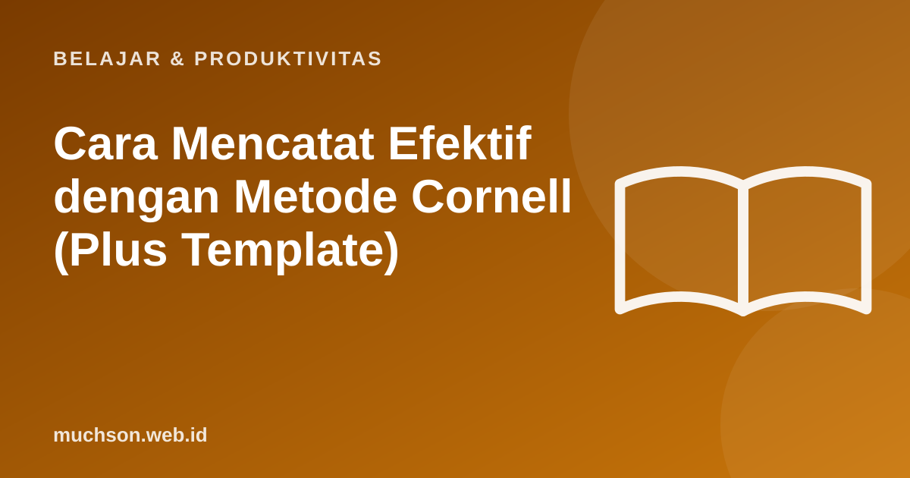

Beranda › Artikel › Belajar & Produktivitas
Belajar & ProduktivitasCara Mencatat Efektif dengan Metode Cornell (Plus Template)
Banyak mahasiswa mencatat rajin, tetapi catatannya jarang dibuka lagi, atau saat dibuka terasa seperti salinan slide. Metode Cornell, yang dikembangkan Walter Pauk dari Cornell University, mengubah catatan menjadi alat belajar: setiap halaman sudah dirancang untuk diuji ulang.

Membagi halaman
Lima langkah (5R)
| Langkah | Kapan | Yang dilakukan |
|---|---|---|
| Record (catat) | Selama kelas | Tulis poin penting di kolom catatan dengan singkatan. Jangan menyalin semua slide. |
| Reduce (ringkas) | Hari yang sama | Ubah catatan menjadi pertanyaan atau kata kunci di kolom isyarat. |
| Recite (ucapkan) | Saat mengulang | Tutup kolom catatan, jawab pertanyaan di kolom isyarat dengan suara. |
| Reflect (renungkan) | Setelah mengulang | Hubungkan dengan materi lain dan pengalaman. Tulis ringkasan di bawah. |
| Review (ulang) | Berkala | Ulangi recite setiap minggu, terutama menjelang ujian. |
Langkah "recite" adalah inti kekuatan metode ini: menutup catatan lalu menjawab pertanyaan sama dengan latihan mengingat (retrieval practice), salah satu teknik belajar dengan bukti paling kuat.
Contoh isi halaman
| Kolom isyarat | Kolom catatan |
|---|---|
| Apa itu fotosintesis? | Proses tumbuhan membuat glukosa dari CO₂ + air dengan energi cahaya; menghasilkan O₂. |
| Di mana terjadi? | Kloroplas, terutama di sel daun (klorofil menyerap cahaya). |
| Dua tahap? | 1) Reaksi terang: di membran tilakoid, menghasilkan ATP dan NADPH. 2) Siklus Calvin: di stroma, membentuk glukosa. |
| Kenapa penting bagi manusia? | Sumber O₂ dan dasar rantai makanan. |
Ringkasan: Fotosintesis mengubah energi cahaya menjadi energi kimia (glukosa) di kloroplas lewat dua tahap, dan menghasilkan oksigen yang kita hirup.
Catatan digital atau tulisan tangan?
Studi Mueller dan Oppenheimer (2014) menemukan mahasiswa yang mencatat dengan laptop cenderung menyalin kata demi kata, dan pada soal konseptual hasilnya lebih rendah dibanding yang mencatat dengan tangan. Studi replikasi berikutnya memberi hasil yang lebih beragam. Pelajaran praktisnya: alatnya tidak sepenting caranya. Apa pun alatnya, tulis dengan kata-kata sendiri, jangan menyalin.
Template untuk dicetak atau disalin
Tanya jawab
Apa itu metode Cornell?
Siapa yang menciptakan metode Cornell?
Apakah metode Cornell bisa dipakai di laptop atau tablet?
Kapan mengisi kolom isyarat?
Sumber dan bacaan lanjut
- Cornell University Learning Strategies Center: The Cornell Note Taking System
- Mueller, P. A., & Oppenheimer, D. M. (2014). The pen is mightier than the keyboard. Psychological Science
- Roediger & Karpicke (2006). Test-enhanced learning